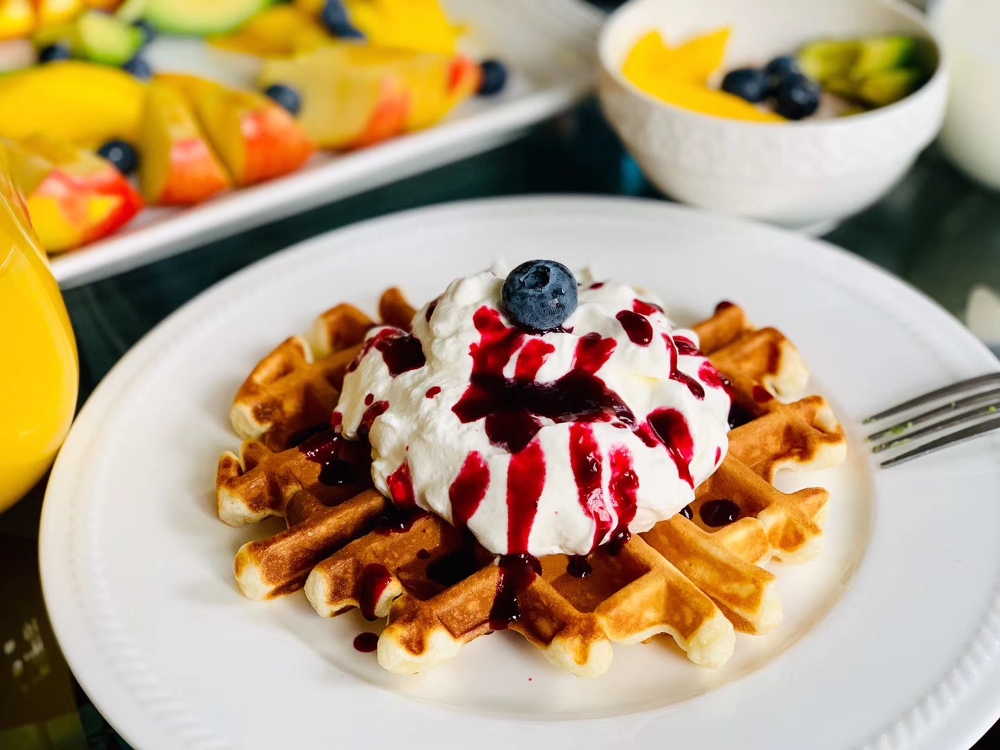
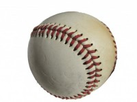
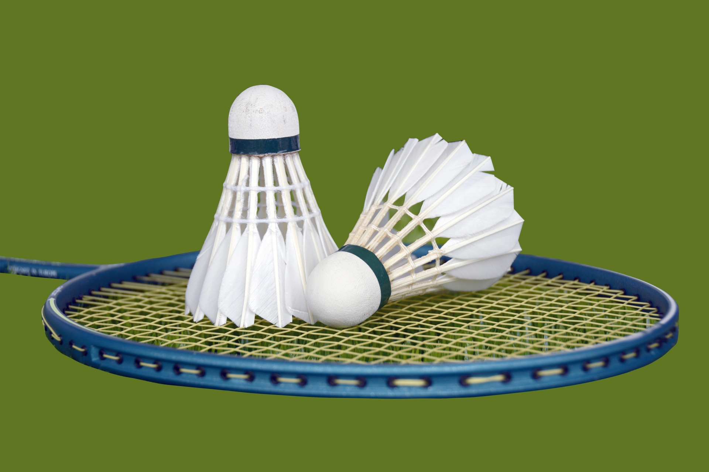
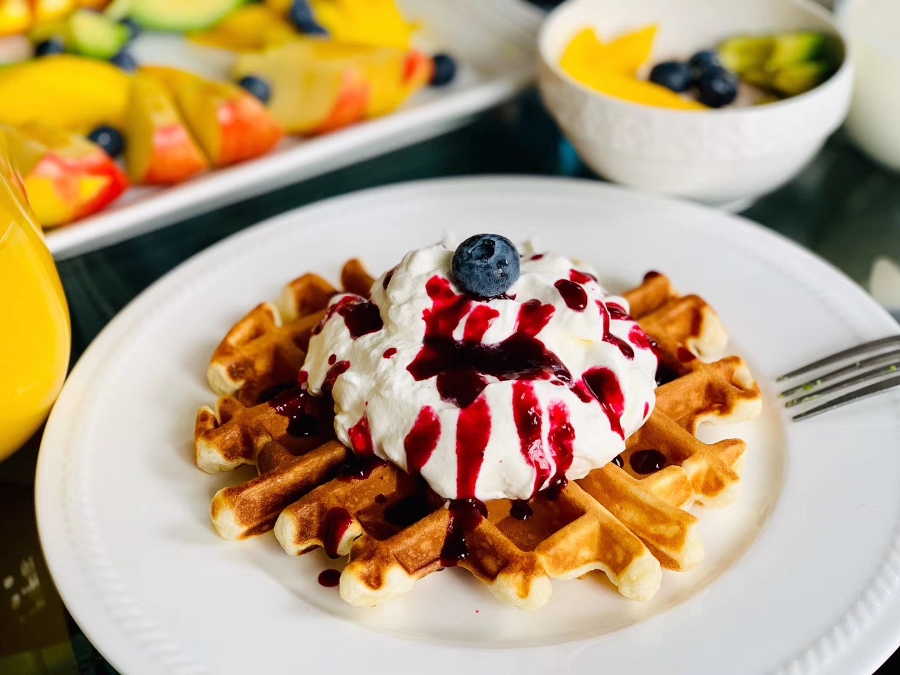
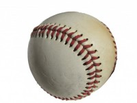
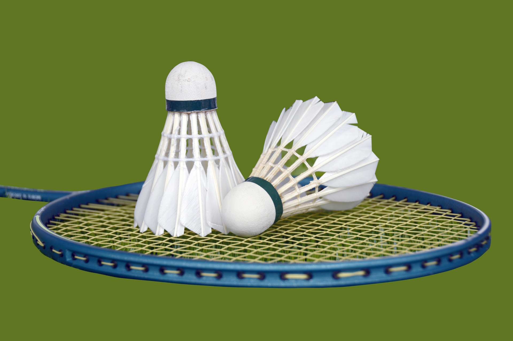

top-right:French Onion Soup
bottom-left:Waffles with whipped cream and blueberry sauce
bottom-right:Pancakes


 

| All About Me! | |||||
|---|---|---|---|---|---|
Kelvin Xu ICS207-1A |
|||||
|
| Hobbies/Interests | |
|---|---|
| Just like everyone else, I also have hobbies. This webpage talks about my hobbies as well as some of my interests and extracurriculars that I've participated in in the past. | |
| Cooking | |
| Ever since I was young, I've always had a passion for helping my mom out in the kitchen, cooking, baking etc. Recently, I've started cooking a lot more, and expanding my culinary capabilities. Cooking is something that I love to do to get my mind off of things, or just have some fun with my family. Nowadays, I cook a lot of the time, often cooking dinner, or just making myself some breakfast. Nowadays, especially with the new school schedule, since my parents aren't home most of the day, I cook for myself. To the right are some pictures of food I've made recently. Hope you enjoy! |
 |
|
top-left:Dalgona Coffee top-right:French Onion Soup bottom-left:Waffles with whipped cream and blueberry sauce bottom-right:Pancakes |
|
| Sports | |
| I was always a relatively active child, participating in school sports since grade 2. I picked up hockey a few yers back, when I was 7, and I still play to this day. I also play baseball and golf, all of which are fun sports to play. Now, because of Covid-19, most sports are cancelled, so I'm not currently playing any sports, but I still exercise daily to maintain a healthy lifestyle. I've been playing baseball and golf for roughly the same amount of time, now, and it's nice because my dad plays all the sports I play so we can go out together. Another sport I enjoy playing is badminton, which my mom played when she was young, and I really enjoyed playing. However, I never took any extracurriculars for it. |
  |
| Walking | |
| Since last year, my family and I went on weekly walks, and we've continued to do that up until now. We go to many places in the nature, including Rouge park, Goodwood conservation area, and many more. It's quite fun, and it's nice to walk in the nature, as it's very relaxing and peaceful. Well, except for when you fall into the water. We generally go to places where our dog can go and play in the water, and there are often logs that we like to walk along. | |
| Music | |
| My sister played piano when she was younger, which led me to a growing interest for music. So I decided to take piano lessons when I was 6. To this day, I am still playing piano, but I am almost done my level 10 exam. I also play the violin for school, and I started learning guitar recently. I also took music theory with the Royal Conservatory of Music(RCM), and completed level 10 music history and harmony. I find music to be really fun to play and learn, as when you play it, the music that comes out can sound very beautiful. |
|

Return to the top.